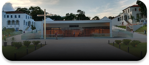
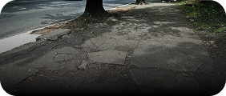
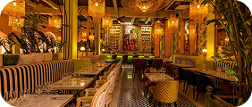

AcessoLivre

-
 Entrar/Criar conta
Entrar/Criar conta
Entrar/Criar conta



A PUC Minas Coração Eucarístico oferece uma estrutura muito bem adaptada para pessoas com deficiência, incluindo rampas de acesso, elevadores e banheiros acessíveis. A universidade também promove eventos e atividades inclusivas para garantir que todos os alunos possam participar plenamente da vida acadêmica.
Ver mais
A Rua das Acácias, no Bairro Jardim Primavera, até possui uma rampa de acesso, mas isso pouco adianta diante das péssimas condições da via. O asfalto cheio de buracos e desníveis torna a circulação perigosa para todos, especialmente para pessoas com dificuldade de locomoção. Falta manutenção e planejamento adequado, já que acessibilidade não se resume a pontos isolados. É necessário que o poder público realize melhorias reais para garantir segurança e mobilidade para a população.
Ver mais
O restaurante Villa Bellini é muito bom no geral e se destaca pela qualidade do atendimento, pelo ambiente agradável e pela variedade de opções no cardápio, atendendo a diferentes preferências. Além disso, conta com acesso por rampa, o que já é um ponto bastante positivo para pessoas com mobilidade reduzida, demonstrando uma preocupação com a acessibilidade e a inclusão. Esses fatores contribuem para tornar a experiência no local mais confortável e acolhedora para todos os clientes.
Ver mais